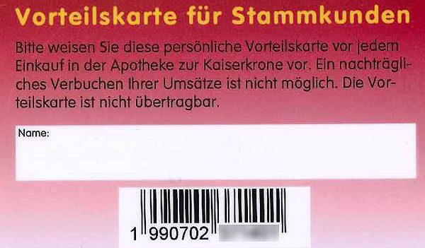

Antidyskratika-Komplexe
Komplexmittel aus dem komplementärmedizinischen Sortiment – Beratung und Bezug über die Offizin sowie über den Fachbereich für Therapeut:innen.
Apotheke, Drogerie, Kosmetik und Komplementärmedizin – online vorbestellen, in der Mariahilfer Straße abholen oder liefern lassen.
Preise laut aktuellem Onlineshop, inkl. USt.
Hinweis: Bei Großhandelsbestellungen und Lieferungen von Österreich nach Deutschland fällt aus rechtlichen Gründen eine USt. von 19 % an und wird auch in Rechnung gestellt.
Die Creme-zu-Schaum Reinigung von CeraVe ist eine sanfte, aber effektive Gesichtsreinigung, die die Haut mit Feuchtigkeit versorgt. Die mit Dermatologen entwickelte Reinigung wird zunächst als Creme-Textur aufgetragen, bevor sie sich bei Kontakt mit Wasser in einen weichen Schaum verwandelt. Die feuchtigkeitsspendende Reinigung entfernt wirksam Schmutz und Make-up, ohne der Haut Feuchtigkeit zu entziehen.

Wir haben die größte Auswahl an dermatologisch getesteten Kosmetikprodukten – dazu unsere hauseigene Pflegelinie Kaiserkrone Cosmetics.
Themen, zu denen unsere Kosmetikfachkräfte beraten – von Sonnenschutz bis Neurodermitis.
Komplexmittel aus dem komplementärmedizinischen Sortiment – Beratung und Bezug über die Offizin sowie über den Fachbereich für Therapeut:innen.
Spagyrische Mischungen stellen wir im eigenen Homöopathie-Bereich her; ebenso Testsätze für die Praxis.
Ergänzend zur TCM-Küche mit Teerezepturen, Dekokten und Tablettenpressung.
Durch Ihre Anmeldung bei unserem Onlineshop sind Sie in der Lage, schneller zu bestellen, kennen jederzeit den Status Ihrer Bestellungen und haben immer eine aktuelle Übersicht über Ihre bisherigen Bestellungen.
Sollten Sie eine Vorteilskarte besitzen, geben Sie bei der Registrierung Ihre EAN-Nummer ein. Die EAN-Nummer befindet sich auf der Rückseite Ihrer Vorteilskarte unter dem Strichcode – es sind die letzten sechs Stellen zu ergänzen.

Telefon, E-Mail, Fax oder online – wir wickeln Anfragen schnell ab, vermitteln spezifische Anrufe an die Fachabteilung und versenden Arzneimittel. Zahlung im Shop mit Mastercard und VISA.